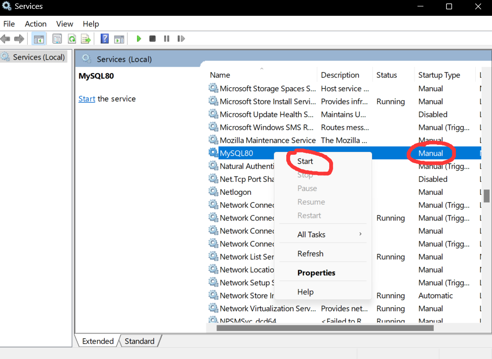
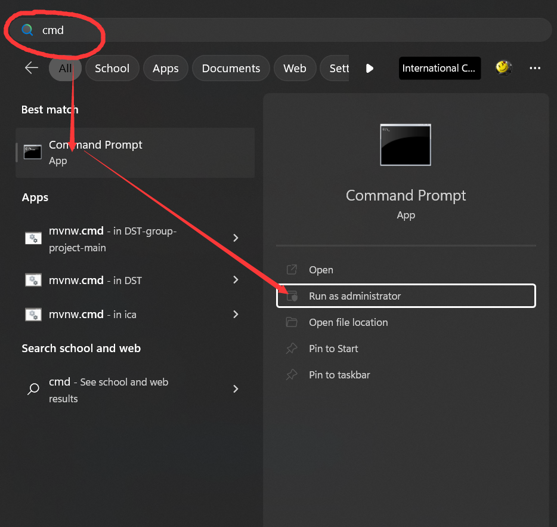

do not select the web version
In this course we use data from dvdrental.sql
Download Mysql from https://dev.mysql.com/downloads/installer/
do not select the web version
follow the instructions (default, default, default...)
Download DBeaver from https://dbeaver.io/. It's like an IDE for databases which greatly eaiser the editing of sql and database.
The are two ways:
Through GUI (recommended for noobs)

find Services

set as Manual and start service (stop service to reduce performance cost)
Through command line (recommended for pros)

Run cmd as administrator
# To enable mysql service, type
net start mysql80
# if it doesn't work, type
net start mysql
# To stop mysql service, type
net start mysql80
# if it doesn't work, type
net stop mysql

add Mysql to Path
# To enter mysql mode, type
mysql
# If it doesn't work, type
mysqlsh
# To exit mysql mode, type \quit
show databases;
use dvdrental;
show tables;
select
*
from
staff
where
first_name = "Mike";
select
film_id,
title,
length,
length * 60 as length_in_secs
from
film
limit 5;
SQL allows the use of special operators in conjunction with the WHERE clause. These special operators include
BETWEEN Used to check whether an attribute value is within a rangeIN Used to check whether an attribute value matches any value within a value listLIKE Used to check whether an attribute value matches a given string patternIS NULL Used to check whether an attribute value is null-- Find out customers whose last name start with J.
select
*
from
customer
where
last_name like "J%";
GROUP BY groups the selected rows based on one or more attributesHAVING chooses the grouped rows (by GROUP BY clause) based on a conditionselect
customer_id,
staff_id,
COUNT(*),
SUM(amount)
from
payment
group by
customer_id,
staff_id;
-- What is the minimal length (>46) for films with different rating ?
select
rating,
MIN(length)
from
film
group by
rating
having
MIN(length) >46;
ORDER BY orders the selected rows based on one or more attributes. Can be followed by ASC or DESC
select
*
from
actor
order by
first_name,
last_name,
actor_id;


In MySQL, we use UNION instead of UNION, INTERSECT, and EXCEPT. UNION is set strict and no duplicates; if you want to keep duplicates, you can use UNION ALL.
-- find out actor whose first name is ‘Joe’ and customer whoes first name is ‘Lisa’.
select
first_name,
last_name
from
actor
where
first_name = "Joe"
union
select
first_name,
last_name
from
customer
where
first_name = "Lisa";
-- inner join table city and country with country_id.
select
*
from
city
inner join country on
city.country_id = country.country_id;
Difference between IN and ON: IN is followed by a table while ON is followed by a conditional statement.
CHAR(fixed_len) len<=255, fixed-length character strings. Strings shorter than expected will be padded with spaces to reach the fixed length.VARCHAR(max_len) Variable-length character strings.TEXT Character large object (other DMBSs "CLOB").BLOB Binary large object. Can store images, sounds, videos, PDF files, Word files, etc.INT/INTEGER from -2,147,483,648 to 2,147,483,647.BOOL/BOOLEAN 0 (false) or 1 (true)DECIMAL(m,d) fixed-point, fixed number of digits; m is total digits (1~65), d is digits right of the decimal (0~30)FLOAT/DOUBLE floating-point, up to 7/15 significant digits, less precise than DECIMAL but can store larger/smaller valuesUNSIGNED only +, doubles the maximum of the datatype, e.g. UNSIGNED INT UNSIGNED DECIMALDATE yyyy-mm-dd, from 1000-1-1 through 9999-12-31TIME hh:mm:ss, from -838:59:59 through 838:59:59DATETIME Combination of DATE + TIME, yyyy-mm-dd hh:mm:ss, from 1970-1-1 to 9999-12-31TIMESTAMP Similar to DATETIME, but from 1970-1-1 to 2037-12-31. Can automatically change date by user time zoneYEAR[(4)] e.g. "2021", "2000"TIMESTAMP and DATETIME can keep track of when a row was inserted or last updated
cast(expression as cast_ type)
select
concat('a', space(10), 'b'),
-- 'a b'
length('very good'),
-- 9
upper('very good'),
-- 'VERY GOOD'
lower('VERY GOOD'),
-- 'very good'
reverse('very good'),
-- 'doog yrev'
select
round(-3.14),
-- -3
ceiling(-3.14),
-- -3
floor(-3.14),
-- -4
abs(-3.14),
-- 3.14
sign(-3.14),
-- -1
rand(),
-- a random float number, [0.0, 1.0)
rand(),
-- another random float number
rand(123),
-- rand() with seed
power(3.14, 3),
-- 30.959144
set @t = "2021-11-28 20:23:51"; -- setting a variable
select
current_date(),
current_time(),
current_timestamp(),
utc_date(),
utc_time(),
year(@t),
month(@t),
dayofmonth(@t),
dayofweek(@t);
select
extract(year from @t),
extract(day_second from @t);
select
date_add(@t, interval 1 month),
date_sub(@t, interval 1 day);
select
datediff("2021-11-21", "2021-11-1"),
-- returns the number of days
to_days("2021-11-21"),
-- returns the number of days since the year 0. Not reliable for dates <1582
time_to_sec("0:10");
-- returns the number of seconds since midnight 00:00
select
title,
rating,
if(rating != "R",
"good film",
"x") as good_movie
from
film
create database coursedb;
create table Stu(
stu_id int not null,
name varchar(30) default "Not available",
primary key (stu_id));
drop table Stu;
drop database coursedb;
NOT NULL NULL values not allowedUNIQUE no duplicatesAUTO INCREMENT e.g. for an integer column, each new insertion would add 1 to itDEFAULT default_value convenient to have a default valueCHECK(P) check the data value being entered into a recordPRIMARY KEY A valid relation (table) should have a primary key. By default, PRIMARY KEY == NOT NULL + UNIQUEFOREIGN KEY A field (or collection of fields) that refers to the PRIMARY KEY in another tablecreate table table_name(
column_name_1 type column_constraints,
column_name_2 type column_constraints,
…,
[constraint name] primary key (column_name_1),
[constraint name] foreign key (column_name_2) references table_name_2 (column_name_1),
check(column_name_2>2))
Referential Integrity ensures that a value that appears in one relation for a given set of attributes also appears for a certain set of attributes in another relation.
return values and can be run like built-in functions
delimiter // -- change default delimiter from ";" to "//"
create function my_add(x integer, y integer)
returns integer
deterministic -- state same result on same input, not essential
begin
return x + y;
end //
delimiter ; -- new delimiter "//"
select my_add(1,2); -- test
do not return values (IN/OUT/INOUT parameters) and can be run using CALL keyword
delimiter //
create procedure get_film()
deterministic
begin
select
film_id,
title
from
film;
end//
delimiter ;
call get_film();
Warning: Use "Execute script" instead of "Execute SQL statement" in DBeaver to avoid error.
delimiter //
create procedure my_compare(a int, b int)
deterministic
begin
if a > b then
select
"a is larger than b";
elseif a = b then
select
"a equals b";
else
select
"a is smaller than b";
end if;
end//
delimiter ;
call my_compare(10, 20);
delimiter //
create procedure cumsum(N int)
deterministic
begin
declare s int default 0;
declare i int default 1;
my_loop: loop
set s = s + i;
select
i as added,
s as result;
set i = i + 1;
if i>N then
leave my_loop;
end if;
end loop;
end //
delimiter ;
call cumsum(100);
Database requirements are statements that define the details and constraints of the data and metadata, which can be represented in a conceptual database model, such as Entity-Relationship (ER) model. The result of ER modeling is an ER diagram (ERD).
We use a modified version of Peter Chen’s Notation. View full info
Normalization is a process to improve the design of relational databases, mainly to reduce data redundancy while preserving information. Normal form (NF) is a set of particular conditions upon table structures.
- Remove duplicated rows.
- Eliminate multivalued columns.
A table is in 1NF if each row is unique and not duplicated. Within each row, each value in each column must be single valued.
Create an additional relation for each set of partial dependencies.
- The portion of the primary key in partial dependency => primary key of the new table (becomes a foreign key in original table).
- The columns determined in partial dependency => columns of the new table (removed from original table).
The original table remains after the process of normalizing to 2NF, but no longer contains the partially dependent columns.
A table is in 2NF if it is in 1NF and does not contain partial dependencies (a column of a relation is functionally dependent on a portion of a composite primary key). Table has a single-column primary key <=> Table is in 2NF.
Create additional relations for each set of transitive dependencies in a relation.
- The transitively determinant nonkey column in the original table => the primary key of a new table.
- Move the determined nonkey columns to the new table.
The original table remains after normalizing to 3NF, but it no longer contains the transitively dependent columns
A table is in 2NF if it is in 2NF and does not contain transitive functional dependencies (nonkey columns functionally determine other nonkey columns).
Denormalization is reversing the effect of normalization by joining normalized relations into a relation that is not normalized in order to improve query performance.
Indexing is a mechanism for increasing the speed of data search and data retrieval on relations with a large number of records.
Linear Search O(n) in the worst case
not indexed

Binary Search O(log(n))
creates an additional index table (sorted + pointer), and allows binary search on it and then points back to the original column (unsorted) to increase the speed of search and retrieval on the columns that are being indexed.

Hash Index O(1)
is useful when files are not sequential. Data in the system distributes to storage spaces called buckets depending on the key value calculated by hash function.

B-tree Index O(log(n)) B-tree generalizes the binary search tree to allow more than 2 branches in the nodes. The index tree is stored separately from the data. The lower-level leaves contain the pointers to the actual data rows. More info about B-tree
create index index_name
[using {btree | hash}]
on table_name (column_name [asc | desc],
...);
Database operations have two types:
Database transactions have two types:
begin;
update
accounts
set
balance = balance - 100.00
where
name = 'Bob';
update
accounts
set
balance = balance + 100.00
where
name = 'Alice';
commit;
Consistent Database State all data integrity constraints satisfied
A transaction must begin with a consistent database state, and end with another consistent state. But the intermediate state during a transaction could be inconsistent.
The above is about a single transaction, called CAD requirements. In reality, multiple transactions can occur at the same time and access the same data items. Thus, we have ACID requirements for multiple transactions.

Lost Update ("modified after write", write-write)
two concurrent transactions update the same data element, and one of the updates is lost (overwritten by the other transaction)
 T1 and T2 read the same data and update the data concurrently. The results submited by T2 cause the lost of update by T1.
T1 and T2 read the same data and update the data concurrently. The results submited by T2 cause the lost of update by T1.
Dirty Read ("modified before read", write-read-rollback)
a transaction reads data from a row that has been modified by another running transaction (but not yet committed)
 Just before T1 reads some data, T2 updates the same data. However, after that, T2 performs a rollback due to some reason. Now the data read by T1 is inconsistent with the data in the database.
Just before T1 reads some data, T2 updates the same data. However, after that, T2 performs a rollback due to some reason. Now the data read by T1 is inconsistent with the data in the database.
Non-repeatable Read ("modified between two reads", read-write-read)
a transaction reads the same data element twice, but the data element is changed by another transaction between the two reads
 T1 reads some data, T2 then updates the data, so when T1 reas the data again, the data is inconsistent with previous ones.
T1 reads some data, T2 then updates the data, so when T1 reas the data again, the data is inconsistent with previous ones.
Phantom Read ("modified after read", read-write)
a transaction queries the table, but new rows are added or removed by another transaction to the records being read
 T1 reads some data based on some conditions, then T2 inserts some new data that matches the condition. (if T1 searches for data with the same condition, more records are returned)
T1 reads some data based on some conditions, then T2 inserts some new data that matches the condition. (if T1 searches for data with the same condition, more records are returned)
| Isolation Level | Dirty Read | Lost Update | Non-repeatable Read | Phantom Read |
|---|---|---|---|---|
| Serializable | N | N | N | N |
| Repeatable Read | N | N | N | Y |
| Read Committed | N | Y | Y | Y |
| Read Uncommitted | Y | Y | Y | Y |
If two operations on the same data has at least one "write" in them, then they can not swap, otherwise will cause a conflict (loss of equivalence) before and after swapping.
- I = read(Q), J = read(Q);
- I = read(Q), J = write(Q);
- I = write(Q), J = read(Q);
- I = write(Q), J = write(Q);
Case 1 to case 4 have different results if we swap the order, so I and J operations are conflict in above case 2~4.
Further explaintion in Chinese
BEGIN and COMMITROLLBACK)BEGIN and COMMIT to switch to transaction mode
BEGIN, autocommit is disabled until the transaction ends with COMMIT or ROLLBACKcd "C:\Program Files\MySQL\MySQL Server 8.0\bin"
mysqldump -u root -p --databases dvdrental > my_database.sql